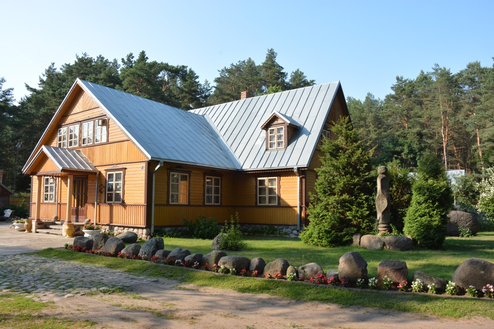

-

Sodyba "Poilsis Vištytyje"
Aprašymas
POILSIO IR LAISVALAIKIO
KAIMO SODYBA "Poilsis Vištytyje”
Sodyba "Penki milžinai" įsikūrusi miško apsuptyje, greta upės Nemuno. Ši sodyba puikus pasirinkimas tiems, kurie ieško tikrosios poilsio oazės. Tik 14 km nuo Kauno. LAISVĖS, VISIŠKO PRIVATUMO IR ERDVĖS POJŪTIS JAUKUMAS - PAGRINDINIS SODYBOS AKCENTAS Sodybos vaizdingos salės erdvės suteikia galimybę sutalpinti iki 30 žmonių jūsų šventei. Siūlomas maitinimas vietoje ir renginių koordinavimas kartu su šiomis paslaugomis: fotografas, muzikantai, maitinimas su aptarnavimu, jaučio kepimas ant laužo. Jums pasirinkus galite turėti galimybę švęsti savo šventes rengiant gyvas pramogas: terealizuotus pasirodymus, sporto šventes, įvairias reprezentacijas. Mūsų įmonės renginių planavimo ir valdymo paslauga nieko nepalieka atsitiktinumui, planuodami ir rengdami verslo renginius, pradedant nuo mažų priėmimų iki įspūdingų Kalėdinių vakarėlių. Susisiekite su mumis ir mes rasime kartu geriausią sprendimą Jūsų šventei.Kainos nuo: 200e
Depozitas: 50eArtimiausios lankytinos vietos: skulptūrų parkas, Trejybės bažnyčia
Susisiekite telefonu: (8-657) 93411 arba el. paštu: poilsis@gmail.com